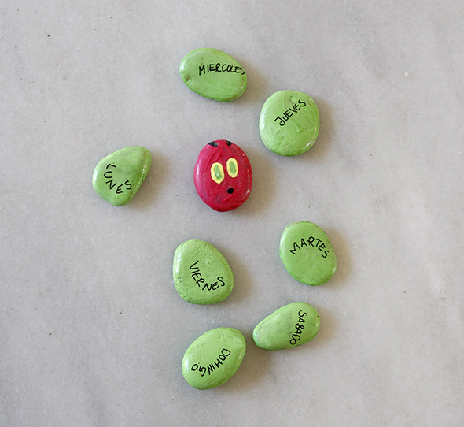

Inspiriert von der kleinen Raupe Nimmersatt: Steine mit Fingerfarbe anmalen und nach dem Trocknen mit etwas Holzleim einreiben, damit sie glänzen und die Farbe geschützt ist. Dann haben wir die Wochentage daraufgeschrieben, und die Kinder üben, sie in die richtige Reihenfolge zu bringen. Auf die Rückseite kann man die Tage in einer anderen Sprache schreiben: Zur Kontrolle einfach umdrehen.